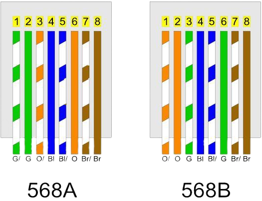

Meios de transmissão de dados
Cabos coaxiais
Utilizados em redes de computadores antigas e ainda hoje em cabos de
antenas para redes wireless e cable modem, mas que possuíam uma série de
limitações como: mal contato, conectores caros, cabos pouco maleáveis e um
limite de velocidade de 10 Mbits/s. O cabo coaxial foi por certo tempo
utilizado como cabeamento responsável pela interligação de computadores
em uma rede. Um cabo coaxial é basicamente composto por quatro
elementos (da parte interna para a externa): um fio de cobre (responsável por
transmitir sinais elétricos), um material isolante, com o intuito de minimizar
interferências eletromagnéticas produzidas pelo cobre (condutor de energia),
um condutor externo de malha e uma camada plástica protetora do cabo.
Estes quatro elementos combinados, formam o cabo coaxial.
Cabos de par trançado

Os cabos de par trançado são, atualmente, os mais utilizados em uma rede
local de computadores. Composto por pares de fios de cobre, trançados
entre si, possuem diferentes tipos, categorias e padrões.
Existem algumas nomenclaturas que remetem ao cabo de par trançado,
como por exemplo, as expressões 10Base-T ou 100Base-T, que se referem ao tipo de meio utilizado (no caso “T”, como par trançado e “10” ou “100”, como a taxa de transmissão em megabits). Outra expressão que nos remete a ideia de cabo de par trançado é a expressão “Ethernet” (protocolo de interconexão para redes locais), bastante usual, no funcionamento das redes de computadores. Cabos de par trançado fazem uso de material condutor (cobre) para transmitir sinais elétricos. Associado a isso temos basicamente a frequência que este sinal é transmitido e a quantidade de bits que podem ser transferidos por segundo. Por tratar-se de material condutor de sinais elétricos, os cabos de par trançado estão sujeitos a interferências eletromagnéticas externas de diferentes naturezas. e-Tec Brasil 76 Redes de Computadores.
Uma das maiores vantagens em se utilizar cabos de par trançado para
implantar uma rede de computadores é o fato de possuírem baixo custo e
flexibilidade em prestar manutenção, corrigir eventuais problemas ou até
mesmo expandir o número de computadores ligados a esta rede.
Categorias de cabos de par trançado
Os cabos de par trançado são divididos em categorias como uma espécie de
classificação e caracte rísticas do mesmo (frequência, velocidade de
transmissão, etc.).
As categorias dos cabos de par trançado vão de 1 a 7. Para todas estas
categorias a distância máxima permitida entre um ponto e outro onde o cabo é utilizado é de 100 metros. Fatores que influenciam no comprimento máximo do cabo já foram citados anteriormente, como frequência, taxa de transferência de dados e interferência eletromagnética.
No Quadro é possível visualizar um comparativo entre as categorias existentes,
taxa de transfe rência possível e frequência.
Padrões de conexão de cabo e pinagem

Um cabo de par trançado dispõe em seu interior de oito fios dispostos em
pares, sendo que destes quatro pares somente dois pares são efetivamente
utilizados (sendo um para transmitir e outro para receber dados). Os oito fios
presentes no cabo possuem cores diferentes, como forma de simplificar a
identificação dos mesmos e a crimpagem (ato de conectar o cabo ao conector
RJ-45).
Para que seja mantido um padrão quanto a ordem de cores deste cabo junto
ao conector, tem-se dois padrões bastante utilizados: os padrões EIA 568A e o
padrão EIA 568B. O padrão EIA 568B é o mais comum e segue a ordem quanto
a disposição dos fios, conforme apresentado no quadro:
Fibra óptica
Os cabos de fibra óptica popularizaram-se e hoje tem um papel fundamental
nas telecomunicações, principalmente em ambientes que necessitam de
uma alta largura de banda como é o caso da telefonia, televisão a cabo, entre
outros. A redução do preço da fibra, o alcance e quantidade de dados que é
possível trafegar nela são alguns dos motivos da aceitação e utilização das
fibras ópticas em longas distâncias, bem como, gradativamente nas redes
locais de computadores.
Uma fibra óptica nada mais é do que uma pequena haste de vidro,
revestida por materiais protetores, que utiliza-se da refração interna total,
para poder transmitir feixes de luz ao longo da fibra por grandes distâncias.
Junta-se a capacidade de transmissão da fibra com o fato da perda ser
mínima em grande parte dos casos.
Um cabo de fibra óptica é composto por diferentes materiais, conforme
pode ser descrito a seguir, da parte interna para a externa da fibra (SILVA,
2010):
O núcleo, geralmente produzido de vidro, possui em média 125 mícrons
(um décimo de um milímetro aproximadamente), por onde passa a luz
emitida e refletida por toda a fibra. • Casca – geralmente de plástico serve
para revestir a fibra.
A capa é feita de plástico e tem o objetivo de proteger tanto a casca como a
fibra.
As fibras de resistência mecânica servem para preservar o cabo evitando
que o mesmo seja danificado.
O Revestimento externo é a camada de plástico externa que protege os cabos
de fibra óptica internos.
Tipos de fibra
Os tipos de fibra óptica são classificados principalmente em fibra
monomodo, multimodo, monocore, multicore e fibra óptica plástica.
- A fibra monomodo possui um núcleo estreito, de 8 a 10 micrômetros, e
permite que a luz viaje em um único feixe, o que reduz a atenuação e a
dispersão, tornando-a ideal para longas distâncias e altas velocidades, como
em redes metropolitanas e conexões intercontinentais.
- Já a fibra multimodo, com núcleo mais largo (50-62,5 micrômetros),
permite múltiplos feixes de luz simultâneos, sendo mais barata e adequada
para curtas distâncias, como em redes locais (LANs) e data centers.
- As fibras também podem ser monocore, com um único núcleo, ou
multicore, que possuem vários núcleos em um único cabo, ampliando a
capacidade de transmissão, principalmente em aplicações experimentais.
Por fim, a fibra óptica plástica, feita de plástico em vez de vidro, é mais
flexível e de custo mais baixo, mas com maior atenuação, sendo usada em
redes domésticas, automação e dispositivos eletrônicos.
Conexão sem fio ou wireless
As redes de transmissão e comunicação sem-fio, também conhecidas como
wireless, são, sem dúvida, uma grande alternativa aos meios de transmissão
cabeados (par trançado e fibra óptica), pois se utilizam do ar para enviar e
receber sinais de comunicação.
Este tipo de comunicação é útil em situações onde a utilização por meio de
cabos se torna inviável, porém, como qualquer outra tecnologia, apresenta
suas vantagens e desvantagens. Na sequência desse capítulo, abordaremos
algumas tecnologias de transmissão sem-fio, como: rádio, Bluetooth, Wi-Fi,
infravermelho, laser, entre outros.
-
Rádio
A tecnologia via rádio é uma forma de transmissão de dados sem fio que utiliza
ondas de rádio para conectar dispositivos em uma rede. Essa tecnologia é
amplamente utilizada em áreas onde a infraestrutura cabeada é inviável ou
custosa, como zonas rurais e locais de difícil acesso.
Ela funciona transmitindo sinais entre torres ou antenas, podendo cobrir
grandes distâncias dependendo da frequência utilizada e da potência dos
equipamentos. Existem diferentes bandas de frequência, como UHF, VHF, e
micro-ondas, que são usadas para aplicações como telecomunicações, Internet
banda larga, TV digital e rádio AM/FM
As vantagens incluem rápida instalação, baixo custo de manutenção e
flexibilidade para cobrir áreas remotas. No entanto, é suscetível a interferências
climáticas e limitações de largura de banda em comparação com tecnologias
mais modernas, como fibra óptica. É uma solução eficiente para comunicação
em locais sem infraestrutura fixa.
-
Bluetooth
O Bluetooth é uma tecnologia de transmissão de dados sem-fio, que
permite a comunicação entre computadores, notebooks, smartphones,
mouse, teclado,impressoras, entre outros dispositivos de forma simples e
com um baixo custo, bastando que estes dispositivos estejam em uma
mesma área de cobertura.
A tecnologia Bluetooth (padronizada pela IEEE 802.15) possui
características como: baixo consumo de energia para seu funcionamento e um padrão de comunicação sem-fio para dispositivos que façam uso desta tecnologia. Dessa forma, a comunicação entre estes dispositivos ocorre através de radiofrequência, independente da posição deste dispositivo, desde que o mesmo se encontre dentro de uma mesma área de abrangência dos demais dispositivos que queiram comunicar-se.
-
Wi-Fi
O Wi-Fi é uma tecnologia de transmissão sem fio que utiliza ondas de rádio
para conectar dispositivos a redes locais e à Internet. Ele opera principalmente
nas bandas de frequência de 2,4 GHz e 5 GHz, com algumas versões modernas
também utilizando a banda de 6 GHz (Wi-Fi 6E). A transmissão é baseada nos
padrões da família IEEE 802.11, que definem diferentes versões de Wi-Fi, como
802.11n, 802.11ac e 802.11ax (Wi-Fi 6).
O Wi-Fi permite comunicação rápida e eficiente em curtas distâncias, com
taxas de transmissão que podem variar de alguns Mbps a vários Gbps,
dependendo do padrão e das condições de uso. Suas vantagens incluem
mobilidade, facilidade de instalação e integração com dispositivos variados. No
entanto, a qualidade do sinal pode ser afetada por obstáculos físicos,
interferências eletromagnéticas e a quantidade de dispositivos conectados. É
amplamente usado em residências, empresas e espaços públicos para fornecer
acesso rápido e sem fio à Internet.